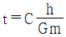
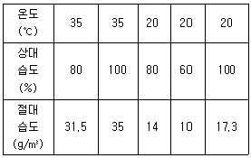
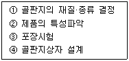

포장산업기사 (2003-05-25 기출문제)
1과목: 포장일반
1. Unit Load System과 가장 관계가 깊은 것은?
- Palletization
- Floating Crane
- Crane
- Fork lift
(정답률: 알수없음)

2. 가장 가깝게 보이는 색상은?
- 적색
- 녹색
- 청색
- 백색
(정답률: 알수없음)
3. 포장의 색채 역할과 가장 거리가 먼 것은?
- 포장의 색채는 반드시 색채 조화론에 따라야 한다.
- 포장의 색채는 내용상품을 특히 강조해야 한다.
- 포장의 색채는 시각적인 흥미를 조장할수 있어야 한다.
- 포장의 색채는 구매충동을 일으키게 할 수 있어야 한다.
(정답률: 알수없음)
4. 증권, 지폐, 포장필름에 사용되는 인쇄방식은?
- 옵셋인쇄
- 그라비아 인쇄
- 실크스크린 인쇄
- 철판인쇄
(정답률: 알수없음)
5. PS판 제판의 특징을 설명한 내용중 잘못된 것은?
- 평판제판에 사용
- 친수성이 좋음
- 인쇄가 잘됨
- 인쇄력과 내쇄력이 좋음
(정답률: 알수없음)
6. 액체용 충전기의 충전능력 결정요소로 가장 올바른 것은?
- 충전시간과 충전밸브의 크기
- 충전밸브수와 충전밸브의 크기
- 충전시간과 충전밸브수
- 충전밸브수와 전진밸브의 크기
(정답률: 알수없음)
7. 스트립 포장을 하기위한 정제의 이송방법이 아닌 것은?
- 적층 이송
- 가로방향 이송
- 덤블링(뒹굴림)에 의한 이송
- 길이방향 이송
(정답률: 알수없음)
8. 병의 세정기에서 주둥이의 녹제거와 병의 광택을 주는 효과가 있는 세정방법은?
- 전분사식 세정
- 침적＋고압분사식 세정
- 침적＋브러쉬 세정
- 초음파 세정
(정답률: 알수없음)
9. 가격이 저렴하고, 가볍고, 적재· 하역시 미끄러지지 않고 보수가 용이한 팰리트는?
- 플라스틱 팰리트
- 목재 팰리트
- 철제 팰리트
- 일회용 팰리트
(정답률: 알수없음)
10. 국민보건상 필요하다고 인정되는 포장의 제조방법 및 원재료에 관한 법적규제 중 틀린 사항은?
- 제조자의 규격을 인정하지 않는다.
- 포장의 규격에 관하여 국가가 고시할 수 있다.
- 수출목적의 상품은 수입자가 요구하는 규격에 따를 수 있다.
- 기준과 규격에 부합하지 않는 제품은 판매할 수 없다.
(정답률: 알수없음)
11. 포장표준화에 해당되지 않는 것은?
- 치수의 표준화
- 강도의 표준화
- 설계의 표준화
- 기법의 표준화
(정답률: 알수없음)
12. 일반적으로 포장내용물의 중량에 의한 분류 중 가장 올바른 것은?
- 경포장: 내용물 중량이 25kg 미만
- 경포장: 내용물 중량이 10kg 미만
- 중(中)포장: 내용물의 중량이 50 ~200kg
- 중(重)포장: 내용물 중량이 100kg을 초과
(정답률: 알수없음)
13. 정부의 포장폐기물 정책 중 PVC 를 사용하는 첩합(라미네이션) 또는 도포(코팅)을 규제하고 있는데 그 이유로 가장 적합한 것은?
- 포장비용 상승 때문
- 원자재 공급이 어렵기 때문
- 제조공정이 어렵기 때문
- 폐기, 소각시 대기오염 때문
(정답률: 알수없음)
14. 포장디자인의 목적과 기능 중 제품보호기능이 아닌 것은?
- 안전성
- 작업성
- 수송적성
- 식별성
(정답률: 알수없음)
15. 특정 판매업자의 제품이나 서비스를 다른 판매업자들로부터 식별하고 차별화시킬 목적으로 사용되는 명칭, 말, 기호, 상징, 디자인 또는 이들의 결합을 일컫는 용어는?
- 상표(brand)
- 상표명(brand name)
- 상표마크(brand mark)
- 상표색(brand color)
(정답률: 알수없음)
16. 수송 단계에서 골판지 상자에 일어날 수 있는 대표적인 현상은?
- 골판지 상자 골심지의 강화
- 골판지 상자용 원지의 평량 차이
- 흡습 또는 충격, 진동
- 이면 라이너지의 변색
(정답률: 알수없음)
17. 수송포장(겉포장) 표준화를 위한 기본 치수 설정요인이 아닌 것은?
- 수송기관 적성
- 하역설비 적성
- 하역 및 취급 적성
- 화학적 특성
(정답률: 알수없음)
18. 움직이는 조각이라는 뜻으로 작은 진동에도 움직임을 나타내는 형식의 조각을 말하는 용어는?
- 스태빌
- 모빌
- 미스매취
- 스피닝
(정답률: 알수없음)
19. 검은색 또는 유색바탕에 흰색으로 문자나 모양을 나타내는 것을 일컫는 용어는?
- 백발
- 블랙 엔드 화이트
- 디오라마
- 배너
(정답률: 알수없음)
20. 표준 파렛트에 장과 폭이 550× 366mm인 골판지 상자의 1단 적재수는?
- 2× 2
- 2× 3
- 2× 4
- 2× 5
(정답률: 알수없음)
2과목: 포장재료
21. 종이의 물성 중 단위 면적당 무게를 나타내는 말은?
- 겉보기 밀도
- 평량
- 비중
- 섬도
(정답률: 알수없음)
22. 지질이 강인하여 비료, 시멘트, 곡물 등의 포장에 적합한 포장 용지로 가장 적합한 것은?
- 크라프트지
- 인도지
- 라이스지
- 글라신지
(정답률: 알수없음)
23. 목재에 대한 일반적인 설명 내용으로 가장 관계가 먼 것은?
- 일반적으로 침엽수가 활엽수에 비해 무겁고, 건조나 가공이 어렵다.
- 신축은 무거운 재료일수록 크다.
- 목재의 수축 및 팽윤은 섬유의 방향에 따라 다르다.
- 목재의 옹이, 쏠림 등의 결점은 수축에 의한 뒤틀림에 영향을 준다.
(정답률: 알수없음)
24. 금속포장용기에 대한 설명 내용으로 가장 관계가 먼 것은?
- 3 piece 캔의 제조는 1970년대 이전에는 납땜으로 주로 하였으나 지금은 용접으로 거의 대체하였다.
- TFS 란 Tin Fluoro Steel의 약자로 불소를 도금한 것이다.
- TFS는 주석판보다 훨씬 얇은 두께를 만들 수 있어 자원을 절약할 수 있다.
- 알루미늄은 표면 산화막이 화학적으로 안정하여 일반적으로 내식성이 있으나 염소에는 매우 약하다.
(정답률: 알수없음)
25. 플라스틱 중에서 인쇄적성이 가장 낮은 것은?
- LDPE
- PVC
- PS
- PET
(정답률: 알수없음)
26. 박엽지를 수 매에서 최대 120매 까지를 가볍게 적층하여 제조하거나 일정한 두께의 펠트상으로 초조하여 제조한 완충재는?
- 에어 캡
- 목모
- 와딩
- 하니콤
(정답률: 알수없음)
27. 알루미늄박의 외관상 특징으로 가장 적합한 것은?
- 내용물이 보인다.
- 금속성 광택이 난다.
- 소프트한 느낌이 난다.
- 광택은 그다지 없다.
(정답률: 알수없음)
28. 유리의 주원료로 적당하지 않는 것은?
- SiO2
- Na2CO3
- CaCO3
- Cu
(정답률: 알수없음)
29. 플라스틱 필름중에서 비중이 가장 높은 것은?
- PE
- PVDC
- PET
- PP
(정답률: 알수없음)
30. 물에 적시면 강한 접착력을 나타내며 크라프트 지대 등에 사용되는 접착제는?
- Gummed Tape
- Pressure Sensitive Adhesive Tape
- Cellophane Tape
- SBR계 테이프
(정답률: 알수없음)
31. 필름을 열 접착시 일정온도 이상으로 올리게 되면 burn-through 현상이 발생한다. 다음중 burn-through 현상이 발생하지 않는 종류는?
- Nylon
- PP
- PE
- Cellophane
(정답률: 알수없음)
32. 알칼리 셀룰로오스와 이황화탄소에서 얻어지는 셀룰로오스크산토겐산 소오다의 알칼리성 용액으로 셀로판의 제조원료가 되는 것은?
- 카르복시메틸셀룰로오스
- 메틸셀룰로오스
- 비스코스
- 덱스트린
(정답률: 알수없음)
33. 플리스틱 포장재료 중 열경화성 수지에 해당하는 것은?
- 폴리에틸렌(P.E)
- 폴리 아마이드(Poly amide)
- 폴리프로필렌(P.P)
- 페놀 레진(Phenol resin)
(정답률: 알수없음)
34. 감열테이프에서 접착제의 형태에 따른 분류가 아닌 것은?
- 수용매형
- 유기용제형
- 활성지속형
- 핫멜트형
(정답률: 알수없음)
35. 못중에서 스크류못 보다도 뽑아지기 어렵게 하기 위하여 링 형태로 한 것은?
- 링못
- 나사못
- 접합못
- 골못
(정답률: 알수없음)
36. 폴리에틸렌에 대한 설명 내용으로 가장 관계가 먼 것은?
- 폴리에틸렌의 밀도는 방습성, 가스차단성과 관계가 깊다.
- 밀도가 높을 수록 방습성, 가스차단성이 좋다.
- 열접착성이 좋은 편이다.
- 기체차단성이 좋아 보향성이 좋다.
(정답률: 알수없음)
37. 내충격성이 뛰어나 요쿠르트 용기 등의 용도로 쓰이는 유백색의 포장재료는?
- EPS
- HIPS
- OPP
- PVC
(정답률: 알수없음)
38. 수축필름 용도로 적당하지 않은 플라스틱 재료는?
- PVC
- PVDC
- PP
- ABS
(정답률: 알수없음)
39. 발수 골판지에 대한 설명 내용으로 가장 관계가 먼 것은?
- 발수가공은 라이너지 제조공정에서 가능하다.
- 발수가공은 골판지 시이트 접합시 가능하다.
- 발수제로는 파라핀왁스, 염화비닐, 염화비닐리덴 등이 사용된다.
- 발수 골판지는 청과물용으로 적합치 않다.
(정답률: 알수없음)
40. 내핀홀성이 우수하여 뾰족한 제품의 포장에 적당한 플라스틱 필름은?
- PVA
- PC
- Nylon
- PET
(정답률: 알수없음)
3과목: 포장기법
41. 즉석에서 만든 식품을 바로 포장하여, 고객이 들고가게 하는 포장을 말하는 용어는?
- 스트레치 포장
- 원웨이 포장
- 퀵서비스 포장
- 테이크아웃 포장
(정답률: 알수없음)
42. 2 piece 캔의 내면도료 도장방법으로 가장 올바른 것은?
- 롤러 도장
- 붓 도장
- 스프레이 도장
- 전착 도장
(정답률: 알수없음)
43. 환경기체조절포장에서 미생물의 생육억제에 효과가 있는 가스는?
- 이산화탄소+산소
- 산소+질소
- 일산화탄소+질소
- 질소+이산화탄소
(정답률: 알수없음)
44. 탈산소제를 넣어 미생물의 발육을 저지하고 식품의 산화를 방지하고자 한다. 다음중 탈산소제가 아닌 것은?
- 실리카겔류
- 하이드로 설파이트제
- 글루코스 옥시 디아제
- 차아황산 나트륨계
(정답률: 알수없음)
45. 겉포장의 슈링크(Shrink) 집적포장에 대한 설명 내용 중 가장 관계가 먼 것은?
- 포장재료비가 싸진다.
- 집적· 포장· 결속의 자동화가 어렵다.
- 개봉을 안해도 전시효과가 생긴다.
- 수축터널이 필요하다.
(정답률: 알수없음)
46. 식품포장재를 제조시 작업현장에서는 정전기로 인한 여러가지 문제가 발생한다.정전기 발생을 방지하기 위한 활동으로 가장 관계가 먼 것은?
- 금속리본을 사용하여 어스를 설치한다.
- 공기중의 습도를 올린다.
- 코로나 방전으로 공기속을 이온화하여 정전기를 중화한다.
- 건조한 공기를 별도 공급해 준다.
(정답률: 알수없음)
47. 완충포장 설계에서 완충재의 두께산출 공식은

이다. 여기서 Gm은 무엇을 뜻하는가?- 낙하 높이
- 완충 계수
- 제품에 허용되는 최대 가속도
- 완충 능력
(정답률: 알수없음)
48. 작업장의 습도 조정을 하기 위해 작업장의 온도조건은 35℃ 80% RH로 나타내고 있었다.이 작업장을 20℃ 60% RH로 조정했을 때 결로된 수분량은 1m3 당 얼마인가? (단, 공기선도에 다른 수치는 아래와 같다.)

- 17.5g
- 21.5g
- 14.2g
- 25g
(정답률: 알수없음)
49. 콘튜어 포장(Contour packaging)과 가장 관계가 깊은 제품은?
- 생선
- 계란
- 두부
- 감자
(정답률: 알수없음)
50. 완충재료인 발포 폴리스틸렌의 발포배율이 50배 일때의 재료비중은?
- 2
- 0.2
- 0.02
- 0.002
(정답률: 알수없음)
51. PET12/CPP20인 연포장필름의 산소투과도를 계산하면 이론적으로 대략 얼마 정도가 나오겠는가? (이때 PET25μ 의 산소투과도는 155, CPP25μ 는 3,600이다. (단위 : cc/m2.24hr.atm.1bar))
- 200
- 300
- 400
- 500
(정답률: 알수없음)
52. 레토르트 식품을 포장하는 제품을 봉함하기 위하여 두가지 필름을 라미네이션한다. 가장 적당한 라미네이션방식은?
- 드라이 라미네이션 (Dry Lami)
- 웨트 라미네이션 (Wet Lami)
- 압출 라미네이션 (Ec Lami)
- 왁스 라미네이션 (WAX Lami)
(정답률: 알수없음)
53. 인몰드라벨(In Mold Label) 시스템에 대한 설명으로 가장 관계가 먼 것은?
- 사출성형에는 적용하기 어렵다.
- 3차원 형상의 표면인쇄가 가능하다.
- 성형품과 라벨의 일체감이 향상된다.
- 제작 공정수가 축소된다.
(정답률: 알수없음)
54. 보통 나무상자에서 덧대기가 없는 나무상자의 형식은?
- 1형
- 2형
- 3형
- 4형
(정답률: 알수없음)
55. 다음은 일반적인 골판지 상자의 설계과정을 나타낸 것이다. 순서가 바르게 연결된 것은?

- ① - ② - ③ - ④
- ② - ① - ④ - ③
- ③ - ② - ① - ④
- ④ - ③ - ② - ①
(정답률: 알수없음)
56. 햄이나 소세지에 많이 적용하고 있는 포장방법은?
- 로켓 포장(Rocket Pack)
- 필로우 포장(Pillow Pack)
- 폼· 필· 실 포장(Form fill seal Pack)
- 테트라 팩(Tetra Pack))
(정답률: 알수없음)
57. 식품의 품질열화 요인 중 생물학적 요인이 아닌 것은?
- 미생물
- 동물
- 곤충
- PH
(정답률: 알수없음)
58. 몰드(mold)없이 die cutting으로 가능한 완충재료는?
- EPS
- Puld mold
- 골판지
- EPP
(정답률: 알수없음)
59. 장기간 보존을 위한 무균충전우유에 사용되는 포장재질의 구성은?
- PE/종이/PE/알루미늄포일/PE
- PE/종이/PE
- PET/종이/PE/알루미늄포일/PE
- PET/종이/PE
(정답률: 알수없음)
60. 완충포장에서 가장 먼저 고려되어야 될 사항은?
- 충격
- 압축
- 진동
- 살수
(정답률: 알수없음)
4과목: 포장시험 및 평가
61. 국제 탱크 컨테이너의 내압 시험방법에 대한 설명중 틀린 것은?
- 0.45kgf/㎝2{44kPa) 이상의 압력으로 시험한다.
- 시험압력은 탱크 상부에서 계측한다.
- 탱크 및 부속장치를 완전히 검사하기 위하여 30분이상 압력을 유지하여야 한다.
- 안전밸브가 있는 경우에 안전밸브를 작동시켜 같이 시험한다.
(정답률: 알수없음)
62. 종이 및 판지의 내절도(耐折度)시험중 가장 보편적으로 사용되는 시험기의 장력은 어느 것을 제일 많이 사용하는가?
- 0.5 Kg
- 1.0 Kg
- 2.0 Kg
- 2.5 Kg
(정답률: 알수없음)
63. c 관리도는 어떤 분포의 이론에서 관리한계선이 계산되는가?
- 정규분포
- 초기하분포
- 이항분포
- 포아송분포
(정답률: 알수없음)
64. 폴리에틸렌 가공지의 내한성 시험시 처리온도는?
- 0± 2℃
- -10± 2℃
- -20± 2℃
- -30± 2℃
(정답률: 알수없음)
65. 지대(paper sack)의 시험항목이 아닌 것은?
- 인열강도
- 바늘땀 강도
- 인장강도
- 가스 투과도
(정답률: 알수없음)
66. 모집단의 중심점이 어느곳에 있는지를 나타내는 것이 아닌 것은?
- 평균치(mean)
- 중앙치(median)
- 최빈수(mode)
- 범위(range)
(정답률: 알수없음)
67. 판지의 스티프네스(STIFFNESS) 시험시 굴곡각도는?
- 15°
- 45°
- 90°
- 180°
(정답률: 알수없음)
68. 계수 조정형 샘플링 검사에서 품질보증을 할 수 있는 것은?
- LTPD
- AOQ
- AOQL
- AQL
(정답률: 알수없음)
69. 시험결과 보고 단위에 시간의 단위가 들어가지 않는 것으로 가장 올바른 것은?
- 사이즈도 시험법
- 흡수도 시험법
- 투수도 시험법
- 투기도 시험법
(정답률: 알수없음)
70. 포장화물 및 용기의 경사충격시험 방법에 대한 설명 내용으로 가장 관계가 먼 것은?
- 활주용 레일은 수평면에 대해 10도 경사시킨다.
- 포장화물이 수직방향의 충격을 받았을 때를 예상한 시험이다.
- 무게 및 체적이 크고 낙하시험의 적용이 곤란한 경우에 적합하다.
- 시료가 충격을 받는 면을 활주차의 앞끝으로부터 5cm 앞에 놓는다.
(정답률: 알수없음)
71. 완충재료 성능시험에 사용되지 않는 시험은 어느 것인가?
- 정적압축시험
- 두께시험
- 파열시험
- 크리프(Creep)성 시험
(정답률: 알수없음)
72. 동일 공정에서 동일 규격으로 만든 제품이 관리도에서 산포되어 나타나는 주된 원인은 다음 중 어느 것인가?
- 규격의 이상원인
- 공정의 이상원인
- 중심적 경향원인
- 우연원인, 이상원인
(정답률: 알수없음)
73. 적정포장화물시험에 포함되나 포장화물의 종류에 따라서 생략할 수도 있는 시험은?
- 진동시험
- 낙하시험
- 압축시험
- 수송시험
(정답률: 알수없음)
74. 품질관리를 지속적으로 수행하려면 데밍의 관리 사이클인 PDCA를 잘 활용해야한다. 여기서 C가 의미하는 것은?
- 계획을 세운다.
- 계획에 따라 실시한다.
- 계획과 비교.검토한다.
- 수정조치를 취한다.
(정답률: 알수없음)
75. 판지의 압축강도시험 결과를 비압축강도로 표시할 때, 비압축강도 = {압축강도÷( )}× 100 이다. ( ) 안에 들어갈 내용은?
- 시험지의 두께
- 시험지의 평량
- 시험지의 밀도
- 시험지의 중량
(정답률: 알수없음)
76. 포장 화물의 평가시험방법 통칙에 대한 설명중 잘못된 것은?
- 화물이 유통중에 포장에 의한 보호가 적정한지 여부를 평가하는 시험방법이다.
- 위험물, 총무게 1,000kg 이상, 모서리 또는 지름의 최대치수가 230cm를 초과하는 화물은 제외한다.
- 유통조건은 4등급이 있다.
- 시험 순서는 낙하시험, 진동시험, 압축시험 순으로 한다.
(정답률: 알수없음)
77. 타공강도(Puncture strength)의 단위로 가장 올바른 것은?
- ㎏/㎝2
- gr/m2
- ㎏-㎝
- gr-m
(정답률: 알수없음)
78. 골판지 상자의 압축강도를 간접적으로 알기 위하여 골심지에 시행하는 시험은 어느 것인가?
- 링크럿쉬 시험
- 인열강도 시험
- 인장강도 시험
- 내절도 시험
(정답률: 알수없음)
79. 포장재료의 물성시험중 콥법(Cobb)은 무엇을 측정하기 위한 시험인가?
- 종이의 싸이즈드
- 종이의 흡수도
- 종이의 마모도
- 종이의 내절도
(정답률: 알수없음)
80. 모집단을 몇 개의 층으로 나누고 나누어진 각 층에서는 그 층의 크기에 비례하여 샘플을 취하는 방법은?
- 계통 샘플링
- deming 샘플링
- Neyman 샘플링
- 층별비례 샘플링
(정답률: 알수없음)